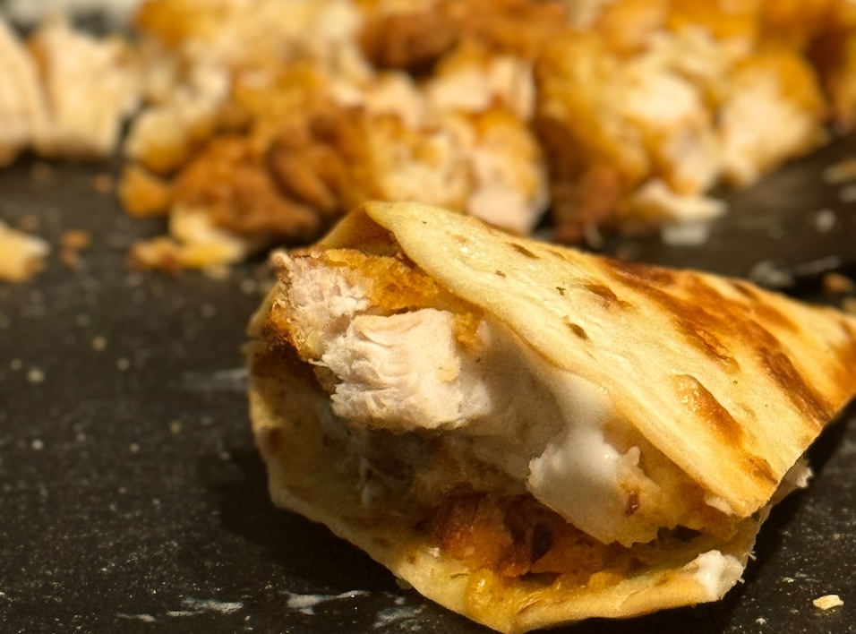

Simple Quesadillas

This recipe will show you how to create simple but wonderfully-
flavored quesadillas. With a subtle onion, garlic, pepper, and
cilantro flavor. You'll impress anyone with this 20-minute recipe.
Ingredients
- Corn or Flour Tortilla
- Frozen bagged breaded chicken (whichever you'd like)
- One medium-sized onion, finely chopped
- Three-to-Twelve Ounces of Cheese (of your choice)
- Cilantro
- Adobo
- Sazonar Completo
- Cooking Spray (high smoke point one like avocado oil)
- Ranch or your favorite condiment
Cooking Instructions
- Place chicken in air fryer. Set to 385°F for 15 mins
- In a large pan on medium heat, spray a nominal amount
of cooking oil.
- Once oil reaches 300°F or it's been a few minutes, place
tortilla on pan.
- After the bottom of the tortilla turns a light golden-
brown, flip over tortilla.
- Add shredded cheese spread evenly atop the tortilla.
- Add one-third of the chopped onion spread evenly
atop the tortilla.
- Generously sprinkle seasonings onto the onion and cheese.
- Spray a small amount of cooking oil onto the tortilla
- After a few mintues, check the bottom of the tortilla. Once
golden-brown, lift tortilla and re-spray pan with small
amount of cooking oil, then flip tortilla so the melted
cheese and onion are faced down.
- Lower heat to three-quarters of the way toward medium.
- Remove cooked chicken from air fryer and chop into
small cubes (or your desired shape).
- After the cheese has cooked for five minutes, place a
plate nearby. Flip the cooked tortilla upside down onto
the plate. Gently scrape any excess cheese remaining on the
pan onto the plated tortilla.
- Add the chopped, cooked chicken onto half of the finished
tortilla. Pour the ranch lightly onto the chicken-side.
- Fold the other half of the tortilla over onto the chicken-
side. Cut into three-to-four triangles. Serve warm.